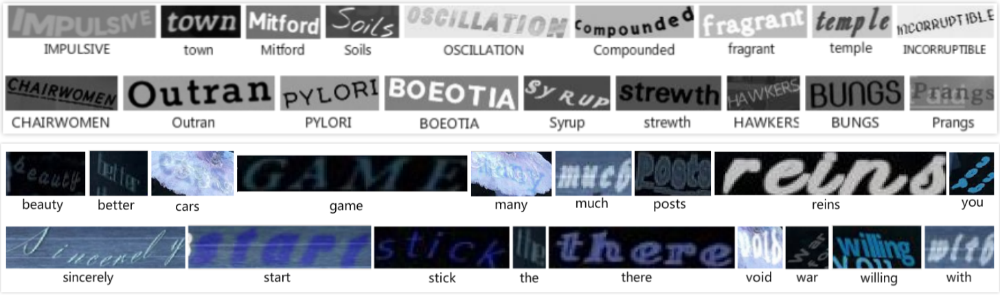
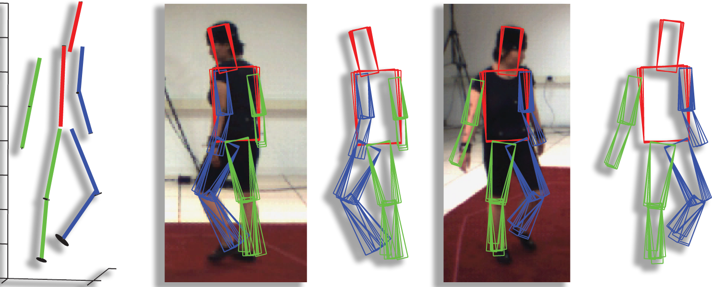

AI & Healthcare
Expertise: Diagnostic Biomarker Discovery & Treatment Pathway Prediction
Deep Data has developed a host of advanced supervised and unsupervised machine learning techniques that are specifically for processing and understanding healthcare data, such as NHS electronic records, pathology results, pharmaceutical data, and image data.
Our particular focus is on discovering novel diagnostic biomarkers and predicting effective treatment pathways. Our deep models aim to not only produce high accuracy but also high human interpretability so that the knowledge discovered by advanced AI can be transferred to and distilled by human experts.
Example: Dementia Severity Prediction
Dementia: a decline in mental ability severe enough to interfere with daily life. Current estimates indicate 47.5 million individuals living with dementia in the world with predictions showing the figure to triple by 2050. Around 100,000 individuals with dementia die each year, with a worldwide cost of 818 billion US Dollars in 2015.
We have developed novel explainable deep learning models for predicting severe dementia onset that requires hospital admission whilst simultaneously performing feature reduction to identify quantifiable predictive medical events. Accurate prediction of disease progression is invaluable in healthcare planning and resource management.
Example: Sepsis Onset Prediction
Severe sepsis and septic shock is a life-threatening condition with a high prevalence, resulting in significant mortality and expense in healthcare. Sepsis remains the primary cause of death from infection. UK prognosis statistics of a patient indicating sepsis show a 35% mortality rate during ICU stay, 47% mortality rate during hospital spell and a 63% rate of hospital re-admission within the 1st year, highlighting the significant dangers of sepsis. With a high prevalence rate of 27.1% of adults meeting severe sepsis criteria within the 24 hours of ICU admission, such dangers remain at the forefront of intensive care medicine.
We have developed deep learning models that effectively predict patient onset of Sepsis at least six hours earlier than official medical diagnosis. We contribute a highly novel methodology towards prediction with statistically significant improved performance as compared to state of the art.
Medical Imaging
Computer Vision
Expertise: motion analysis, object tracking, object recognition, 3D reconstruction
Deep Data has a strong root in Computer Vision and has built up a substantial knowledge pool and tool set to tackle challenging problems in analysing and understanding the content in images and videos. We are specialised in both low level and high level computer vision tasks, which include motion analysis, feature extraction, tracking and camera localisation, object recognition, vision based biometrical analysis, and 3D reconstruction.
These advanced Computer Vision techniques can be applied to a variety of industrial applications, such as augmented and virtual reality, autonomous systems, security and surveillance, automated document processing, and robotics. Deep Data can help you with identifying and formulating computer vision solutions, developing vision systems, and evaluating results.
Example: Text Detection and Recognition
Deep Data has a host of deep neural network backbone implementations, including RCNN family, CTPN, CRNN and ASTER, for detecting and recognising text from images and videos, that exhibit complex background, various geometrical transformations, and large appearance variances.
Example: 3D Human Pose Estimation and Tracking
Advanced computer vision techniques are able to estimate three dimensional information from two dimensional images. For instance, 3D human pose can be estimated from both multi-view images and single images and can be tracked across images to provide detailed description of human motion and action, which can be used in, for example, virtual reality.
Natural Language Processing
Financial Analysis
Price Prediction
Stock market data, and by extension any financial time series data, is highly complex and difficult to predict. With investors being influenced by volatile and unpredictable market conditions, financial market trends tend to be non-linear, uncertain and non-stationary. We have developed novel deep Long Short-Term Memory (LSTM) based time-series data modelling for use in stock market index prediction. Validation on six market indices from around the world demonstrates the robustness in varying market conditions in forecasting the next day closing price. With experimental results showing an average annual profitability performance of up to 200%, our method demonstrates its feasibility and significant results in time-series modelling and prediction of financial markets.
Sentiment Analysis
Sentiment mining algorithms have long been of interest to researchers, traders, and the wider NLP community. Deep Data has developed both unsupervised and supervised methodologies of mining sentiment from financial news releases using a combination of lexicon-based and data-driven model evaluation techniques. For example, a case study centred around Loughran & McDonald financial sentiment word lists reached 86.4% explained stock momentum variance with a conventional approach, whereas our approach follows a thematic analysis pipeline achieves that of 94.8%.
Portfolio Optimisation
Optimising portfolios are crucial in risk control. Advanced machine learning methods that are purposely designed for time series data, e.g. those Deep Data have developed for price prediction, are ideally placed to perform value-at-risk optimisation to effectively achieve investment objectives and risk management.